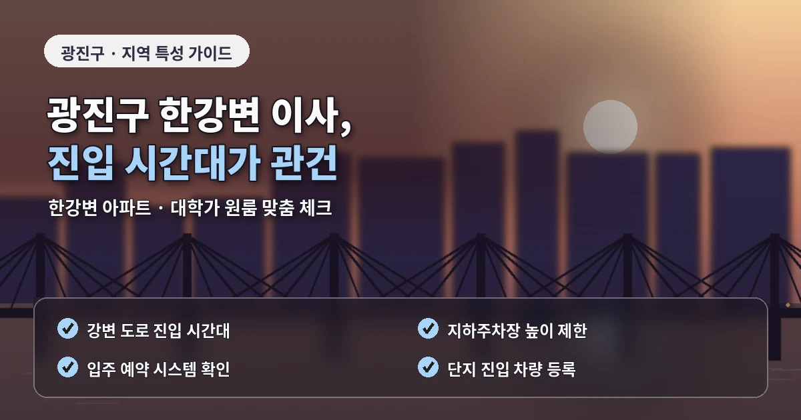
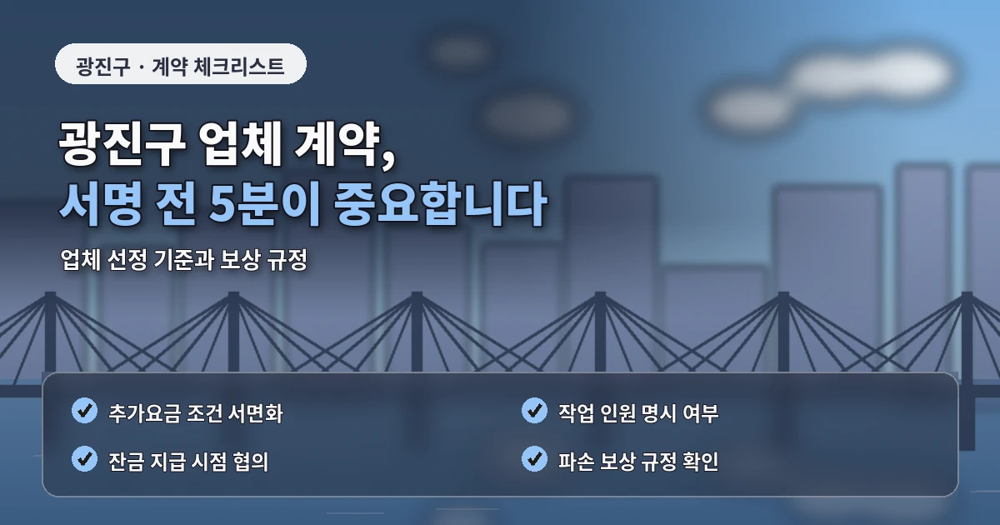

서울 광진구포장이사추천 한강변 견적 체크
광진구에서 포장이사를 준비할 때는
동네별 주거 형태와 차량 이동 조건을
함께 확인하는 것이 중요합니다.
자양동과 구의동은 한강변 아파트와
오피스텔 수요가 함께 있고,
화양동은 대학가와 원룸,
중곡동은 빌라와 상가주택이 섞여 있습니다.

이처럼 주거 형태가 다양하면
같은 평수라도 작업 방식이 달라지고
포장이사 비용도 차이가 날 수 있습니다.
비용과 견적이 달라지는 핵심 기준
광진구 포장이사 견적은
짐의 양만으로 결정되지 않습니다.
차량 진입 가능 여부,
엘리베이터 예약,
사다리차 설치 가능 공간,
대형가전 이동 조건,
건물 앞 주차 가능 시간이
전체 금액에 영향을 줍니다.
특히 자양동이나 구의동의 고층 단지는
엘리베이터 사용 시간이 정해져 있거나
공용공간 보양을 요구하는 경우가 있습니다.
이사 날짜가 확정되면
관리사무소에 먼저 사용 가능 시간을 확인하고
그 정보를 업체에 전달하는 것이 좋습니다.
화양동처럼 원룸과 오피스텔이 많은 지역은
짐이 적어 보여도 주차가 쉽지 않을 수 있습니다.
업체 비교 전 확인해야 할 사항
차량이 건물 바로 앞에 서지 못하면
작업자가 짐을 옮기는 거리가 길어지고
운반 시간이 늘어날 수 있습니다.
이 조건은 견적 단계에서 꼭 전달해야 합니다.
광진구 포장이사 업체추천을 볼 때는
저렴한곳이라는 표현보다
작업 범위가 구체적으로 안내되는지 확인해야 합니다.
포장 박스 제공,
옷장 박스 사용,
가구 보양,
주방 정리,
대형가전 분리와 연결,
파손 보상 기준은 업체마다 다를 수 있습니다.
단순히 총액이 낮아 보여도
포장 범위가 좁거나 추가비 기준이 모호하면
최종 비용이 달라질 가능성이 있습니다.

포장이사 비교견적은
가능하면 3곳 이상 받아보는 것이 좋습니다.
추가비용을 줄이는 준비 방법
중요한 것은 같은 조건으로 비교하는 것입니다.
한 업체에는 사다리차를 말하고,
다른 업체에는 말하지 않으면
견적 비교가 정확하지 않습니다.
출발지와 도착지의 층수,
엘리베이터 유무,
주차 위치,
사다리차 가능 여부,
짐의 종류를 같은 방식으로 알려야 합니다.
광진구는 도로 상황도 고려해야 합니다.
강변북로와 주요 간선도로 주변은
시간대에 따라 이동 시간이 달라질 수 있고,
어린이대공원이나 건대입구 주변은
유동 인구가 많아 차량 대기가 어려울 수 있습니다.
이사 시간을 정할 때는
오전 작업인지 오후 작업인지,
도착지 예약 시간과 맞는지 확인하는 것이 좋습니다.
계약 전 마지막 체크포인트
추가비용을 줄이려면
이사 전 불필요한 짐을 정리해야 합니다.
책, 의류, 소형가전,
오래된 가구를 미리 분리하면
차량 크기와 작업 시간이 줄어들 수 있습니다.
계약 전에는
최종 견적서에 작업 인원,
차량 대수,
포장 범위,
추가비 발생 조건,
파손 보상 기준이 적혀 있는지 확인해야 합니다.
광진구 포장이사는
지역별 주거 조건과 차량 동선을 함께 봐야
정확한 견적을 받을 수 있습니다.
가격만 비교하지 말고
작업 조건, 보상 기준,
일정 조율 능력까지 함께 확인하면
더 안정적인 이사 준비가 가능합니다.
광진구 이사 전 현장 조건 정리
광진구는 한강변 아파트와 대학가 원룸이 함께 있어
같은 구 안에서도 포장이사 방식이 다르게 잡힐 수 있습니다.
자양동의 고층 단지는 엘리베이터 예약과 보양이 중요하고,
화양동의 원룸 밀집 지역은 차량 정차와 짐 운반 거리가 더 중요합니다.
따라서 견적을 받을 때는 주소만 전달하기보다
건물 앞 주차 가능 여부, 엘리베이터 크기,
계단 폭, 사다리차 설치 가능 공간을 함께 알려야 합니다.
이 정보가 정확할수록 업체가 차량과 인력을 현실적으로 배치할 수 있고,
견적 이후 추가비용이 생길 가능성도 줄어듭니다.
광진구 포장이사추천 정보를 활용할 때도
후기 문구보다 작업 조건 설명을 먼저 봐야 합니다.
포장 범위, 운반 기준, 보상 기준이 명확한 업체일수록
이사 당일 예상하지 못한 변수를 줄이기 좋습니다.
마지막으로 계약 전에는 일정 변경과 취소 조건도 확인해야 합니다.
광진구는 도로 상황과 건물 규정에 따라 작업 시간이 달라질 수 있으므로
예약 시간, 도착 시간, 추가비 기준을 문서로 남겨두는 것이 안전합니다.
이 과정을 거치면 비용 비교뿐 아니라 실제 작업 만족도도 높아질 수 있습니다.
광진구 포장이사 비용을 안정적으로 비교하려면
상담 내용을 업체별로 같은 양식에 적어두는 것이 좋습니다.
차량, 인력, 사다리차, 엘리베이터, 포장 범위를 나누어 기록하면
어떤 업체가 실제 조건에 맞는지 더 쉽게 판단할 수 있습니다.
자주 묻는 질문
A. 고층 아파트나 빌라처럼 조건이 다른 경우에는 방문견적이 더 정확합니다.
A. 엘리베이터 예약, 보양 규정, 차량 대기 위치를 먼저 확인해야 합니다.
A. 짐이 적어도 주차나 계단 조건에 따라 비용이 달라질 수 있어 비교가 필요합니다.